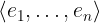
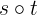

Sequences
On the surface, TLA+ sequences are very much like lists in your programming language of choice. If you are writing code in Java, Python, Lisp, C++, Scala, you will be tempted to use sequences in TLA+ too. This is simply due to the fact that arrays, vectors, and lists are the most efficient collections in programming languages (for many tasks, but not all of them). But TLA+ is not about efficient compilation of your data structures! Many algorithms can be expressed in a much nicer way with sets and functions. In general, use sequences when you really need them.
In pure TLA+, sequences are just tuples. As a tuple, a sequence is
a function of the domain 1..n for some n >= 0 (the domain may be empty).
The duck-typing principle applies to sequences too: Any function with the domain 1..n can also be
treated as a sequence (or a tuple), and vice versa, tuples and sequences are
also functions. So you can use all function and tuple operators on sequences.
Importantly, the domain of a sequence is 1..n for some n >= 0. So the
indices in a sequence start with 1, not 0. For instance, <<1, 2>>[1] gives us
1, whereas <<1, 2>>[2] gives us 2.
The operators on sequences are defined in the standard module Sequences. To
use it, write the EXTENDS clause in the first lines of your module. Like
this:
------ MODULE MyLists ----====
EXTENDS Sequences
...
==============================
Construction. Sequences are constructed exactly as tuples in TLA+:
<<2, 4, 8>>
Sometimes, you have to talk about all possible sequences. The operator
Seq(S) constructs the set of all (finite) sequences that draw elements
from the set S. For instance, <<1, 2, 2, 1>> \in Seq({1, 2, 3}).
Note that Seq(S) is an infinite set. To use it with TLC, you often have
to override this operator, see Specifying Systems, page 237.
Application. Simply use function application, e.g., s[2].
Immutability. As sequences are special kinds of functions, sequences are immutable.
Sequence operators. The module Sequences provides you with convenient
operators on sequences:
- Add to end:
Append(s, e) - First and rest:
Head(s)andTail(s) - Length:
Len(s) - Concatenation:
s \o t - Subsequence:
SubSeq(s, i, k) - Sequence filter:
SelectSeq(s, Test)
See the detailed description in Operators.
Types. In contrast to pure TLA+ and TLC, the Apalache model checker
distinguishes between general functions, tuples, and sequences. They all have
different types. Essentially, a function has the type T_1 -> T_2 that
restricts the arguments and results as follows: the arguments have the type
T_1 and the results have the type T_2. A sequence has the type Seq(T_3),
which restricts the sequence elements to have the same type T_3.
As sequences are also tuples in TLA+, this poses a challenge for the Apalache
type checker. For instance, it can immediately figure out that <<1, "Foo">>
is a tuple, as Apalache does not allow sequences to carry elements of different
types. However, there is no way to say, whether <<1, 2, 3>> should be treated
as a tuple or a sequence. Usually, this problem is resolved by annotating the
type of a variable or the type of a user operator. See HOWTO write type
annotations.
The current SMT encoding of sequences in Apalache is not optimized, so operations on sequences are often significantly slower than operations on sets.
Operators
Tuple/Sequence constructor
Notation: <<e_1, ..., e_n>>
LaTeX notation:

Arguments: An arbitrary number of arguments.
Apalache type: This operator is overloaded. There are two potential types:
- A tuple constructor:
(a_1, ..., a_n) => <<a_1, ..., a_n>>, for some typesa_1, ..., a_n. - A sequence constructor:
(a, ..., a) => Seq(a), for some typea.
That is why the Apalache type checker is sometimes asking you to add annotations, in order to resolve this ambiguity.
Effect: The tuple/sequence constructor returns a function t that is
constructed as follows:
- set
DOMAIN tto1..n, - set
r[i]to the value ofe_ifori \in 1..n.
In Apalache, this constructor may be used to construct either a tuple, or a sequence. To distinguish between them, you will sometimes need a [type annotation].
Determinism: Deterministic.
Errors: No errors.
Example in TLA+:
<<"Printer", 631>>
Example in Python: Python provides us with the syntax for constructing lists, which are indexed with 0!. If we want to stick to the principle “sequences are functions”, we have to use a dictionary.
>>> ["Printer", 631] # the pythonic way, a two-element list
['Printer', 631]
>>> { 1: "Printer", 2: 631 } # the "sequences-are-functions" way
{1: 'Printer', 2: 631}
Sequence append
Notation: Append(seq, e)
LaTeX notation: Append(seq, e)
Arguments: Two arguments. The first argument should be a sequence, the second one is an arbitrary expression.
Apalache type: (Seq(a), a) => Seq(a), for some type a.
Effect: The operator Append(seq, e)
constructs a new sequence newSeq as follows:
- set
DOMAIN newSeqto be(DOMAIN seq) \union { Len(seq) + 1 }. - set
newSeq[i]toseq[i]fori \in 1..Len(seq). - set
newSeq[Len(seq) + 1]toe.
Determinism: Deterministic.
Errors: The argument seq must be a sequence, that is, a function over
integers 1..n for some n. Otherwise, the result is undefined in pure TLA+.
TLC raises a model checking error. Apalache flags a static type error.
Apalache flags a static type error, when the type of e is not compatible with
the type of the sequence elements.
Example in TLA+:
Append(<<1, 2>>, 5)
\* The sequence <<1, 2, 5>>
Example in Python:
>>> # the pythonic way: a list (indexed with 0, 1, ...)
>>> l = [ 1, 2 ]
>>> l.append(5)
>>> l
[1, 2, 5]
>>> # the TLA+ way
>>> l = { 1: 1, 2: 2 }
>>> { i: l[i] if i <= len(l) else 5
... for i in range(1, len(l) + 2) }
{1: 1, 2: 2, 3: 5}
Function application
As sequences are functions, you can access sequence elements with function
application, e.g., seq[2]. However, in the case of a
sequence, the type of the function application is: (Seq(a), Int) => a, for
some type a.
Sequence head
Notation: Head(seq)
LaTeX notation: Head(seq)
Arguments: One argument. The argument should be a sequence (or a tuple).
Apalache type: Seq(a) => a, for some type a.
Effect: The operator Head(seq) evaluates to seq[1].
If seq is an empty sequence, the result is undefined.
Determinism: Deterministic.
Errors: The arguments seq must be a sequence (or a tuple), that is, a
function over integers 1..n for some n. Otherwise, the result is undefined
in pure TLA+. TLC raises a model checking error. Apalache flags a static type
error.
Example in TLA+:
Head(<<3, 4>>)
\* 3
Example in Python:
>>> # the pythonic way: using the list
>>> l = [ 3, 4 ]
>>> l[0]
3
>>> # the TLA+ way
>>> l = { 1: 3, 2: 4 }
>>> l[1]
3
Sequence tail
Notation: Tail(seq)
LaTeX notation: Tail(seq)
Arguments: One argument. The argument should be a sequence (or a tuple).
Apalache type: Seq(a) => Seq(a), for some type a.
Effect: The operator Tail(seq) constructs a new sequence newSeq as
follows:
- set
DOMAIN newSeqto be(DOMAIN seq) \ { Len(seq) }. - set
newSeq[i]toseq[i + 1]fori \in 1..(Len(seq) - 1).
If seq is an empty sequence, the result is undefined.
Apalache encodes a sequences as a triple <<fun, start, end>>, where
start and end define a slice of the function fun. As a result,
Tail is a very simple operation that just increments start.
Determinism: Deterministic.
Errors: The arguments seq must be a sequence (or a tuple), that is, a
function over integers 1..n for some n. Otherwise, the result is undefined
in pure TLA+. TLC raises a model checking error. Apalache flags a static type
error.
Example in TLA+:
Tail(<<3, 4, 5>>)
\* <<4, 5>>
Example in Python:
>>> # the pythonic way: using the list
>>> l = [ 3, 4, 5 ]
>>> l[1:]
[4, 5]
>>> # the TLA+ way
>>> l = { 1: 3, 2: 4, 3: 5 }
>>> { i: l[i + 1] for i in range(1, len(l)) }
{1: 4, 2: 5}
Sequence length
Notation: Len(seq)
LaTeX notation: Len(seq)
Arguments: One argument. The argument should be a sequence (or a tuple).
Apalache type: Seq(a) => Int, for some type a.
Effect: The operator Len(seq) is semantically equivalent to
Cardinality(DOMAIN seq).
Apalache encodes a sequences as a triple <<fun, start, end>>, where
start and end define a slice of the function fun. As a result,
Len is simply computed as end - start.
Determinism: Deterministic.
Errors: The argument seq must be a sequence (or a tuple), that is, a
function over integers 1..n for some n. Otherwise, the result is undefined
in pure TLA+. TLC raises a model checking error. Apalache flags a static type
error.
Example in TLA+:
Len(<<3, 4, 5>>)
\* 3
Example in Python:
>>> # the pythonic way: using the list
>>> l = [ 3, 4, 5 ]
>>> len(l)
3
>>> # the TLA+ way
>>> l = { 1: 3, 2: 4, 3: 5 }
>>> len(l.keys())
3
Sequence concatenation
Notation: s \o t (or s \circ t)
LaTeX notation:

Arguments: Two arguments: both should be sequences (or tuples).
Apalache type: (Seq(a), Seq(a)) => Seq(a), for some type a.
Effect: The operator s \o t
constructs a new sequence newSeq as follows:
- set
DOMAIN newSeqto be1..(Len(s) + Len(t)). - set
newSeq[i]tos[i]fori \in 1..Len(s). - set
newSeq[Len(s) + i]tot[i]fori \in 1..Len(t).
Determinism: Deterministic.
Errors: The arguments s and t must be sequences, that is, functions
over integers 1..n and 1..k for some n and k. Otherwise, the result is
undefined in pure TLA+. TLC raises a model checking error. Apalache flags a
static type error.
Apalache flags a static type error, when the types of s and t are
incompatible.
Example in TLA+:
<<3, 5>> \o <<7, 9>>
\* The sequence <<3, 5, 7, 9>>
Example in Python:
>>> # the pythonic way: a list (indexed with 0, 1, ...)
>>> l1 = [ 3, 5 ]
>>> l2 = [ 7, 9 ]
>>> l1 + l2
[3, 5, 7, 9]
>>> # the TLA+ way
>>> l1 = { 1: 3, 2: 5 }
>>> l2 = { 1: 7, 2: 9 }
>>> { i: l1[i] if i <= len(l1) else l2[i - len(l1)]
... for i in range(1, len(l1) + len(l2) + 1) }
{1: 3, 2: 5, 3: 7, 4: 9}
Subsequence
Notation: SubSeq(seq, m, n)
LaTeX notation: SubSeq(seq, m, n)
Arguments: Three arguments: a sequence (tuple), and two integers.
Apalache type: (Seq(a), Int, Int) => Seq(a), for some type a.
Effect: The operator SubSeq(seq, m, n)
constructs a new sequence newSeq as follows:
- set
DOMAIN newSeqto be1..(n - m). - set
newSeq[i]tos[m + i - 1]fori \in 1..(n - m + 1).
If m > n, then newSeq is equal to the empty sequence << >>.
If m < 1 or n > Len(seq), then the result is undefined.
Determinism: Deterministic.
Errors: The argument seq must be a sequence, that is, a function over
integers 1..k for some k. The arguments m and n must be integers.
Otherwise, the result is undefined in pure TLA+. TLC raises a model checking
error. Apalache flags a static type error.
Example in TLA+:
SubSeq(<<3, 5, 9, 10>>, 2, 3)
\* The sequence <<5, 9>>
Example in Python:
>>> # the pythonic way: a list (indexed with 0, 1, ...)
>>> l = [ 3, 5, 9, 10 ]
>>> l[1:3]
[5, 9]
>>> # the TLA+ way
>>> l = { 1: 3, 2: 5, 3: 9, 4: 10 }
>>> m = 2
>>> n = 3
>>> { i: l[i + m - 1]
... for i in range(1, n - m + 2) }
{1: 5, 2: 9}
Sequence filter
Notation: SelectSeq(seq, Test)
LaTeX notation: SelectSeq(seq, Test)
Arguments: Two arguments: a sequence (a tuple) and a one-argument
operator that evaluates to TRUE or FALSE when called with
an element of seq as its argument.
Apalache type: (Seq(a), (a => Bool)) => Seq(a), for some type a.
Effect: The operator SelectSeq(seq, Test) constructs a new sequence
newSeq that contains every element e of seq on which Test(e) evaluates
to TRUE.
It is much easier to describe the effect of SelectSeq in words than to
give a precise sequence of steps. See Examples.
Determinism: Deterministic.
Errors: If the arguments are not as described in Arguments, then the result is undefined in pure TLA+. TLC raises a model checking error.
Example in TLA+:
LET Test(x) ==
x % 2 = 0
IN
SelectSeq(<<3, 4, 9, 10, 11>>, Test)
\* The sequence <<4, 10>>
Example in Python:
>>> # the pythonic way: a list (indexed with 0, 1, ...)
>>> def test(x):
... return x % 2 == 0
>>>
>>> l = [ 3, 4, 9, 10, 11 ]
>>> [ x for x in l if test(x) ]
[4, 10]
>>> # the TLA+ way
>>> l = { 1: 3, 2: 4, 3: 9, 4: 10, 5: 11 }
>>> as_list = sorted(list(l.items()))
>>> filtered = [ x for (_, x) in as_list if test(x) ]
>>> { i: x
... for (i, x) in zip(range(1, len(filtered) + 1), filtered)
... }
{1: 4, 2: 10}
All sequences
Notation: Seq(S)
LaTeX notation: Seq(S)
Arguments: One argument that should be a set.
Apalache type: Set(a) => Set(Seq(a)), for some type a.
Effect: The operator Seq(S) constructs the set of all (finite) sequences
that contain elements from S. This set is infinite.
It is easy to give a recursive definition of all sequences whose length
is bounded by some n >= 0:
RECURSIVE BSeq(_, _)
BSeq(S, n) ==
IF n = 0
THEN {<< >>} \* the set that contains the empty sequence
ELSE LET Shorter == BSeq(S, n - 1) IN
Shorter \union { Append(seq, x): seq \in Shorter, x \in S }
Then we can define Seq(S) to be UNION { BSeq(S, n): n \in Nat }.
Determinism: Deterministic.
Errors: The argument S must be a set.
Apalache flags a static type error, if S is not a set.
TLC raises a model checking error, when it meets Seq(S), as Seq(S) is
infinite. You can override Seq(S) with its bounded version BSeq(S, n)
for some n. See: Overriding Seq in TLC.
Apalache does not support Seq(S) yet. As a workaround, you can manually
replace Seq(S) with BSeq(S, n) for some constant n. See the progress in
Issue 314.
Example in TLA+:
Seq({1, 2, 3})
\* The infinite set
{ <<>>,
<<1>>, <<2>>, <<3>>,
<<1, 1>>, <<1, 2>>, <<1, 3>>,
<<2, 1>>, <<2, 2>>, <<2, 3>>, <<3, 1>>, <<3, 2>>, <<3, 3>>
...
}
Example in Python: We cannot construct an infinite set in Python. However,
we could write an iterator that enumerates the sequences in Seq(S)
till the end of the universe.